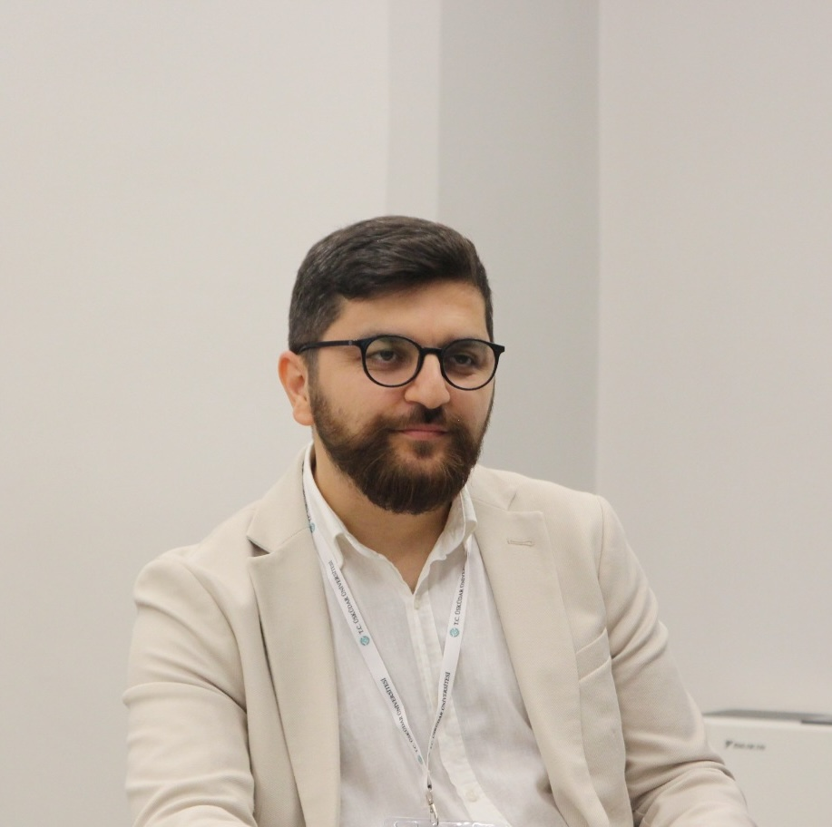

Sadettin Demirel
Dr. Öğr. Üyesi · Üsküdar Üniversitesi · Gazetecilik
Yeni medya, veri gazeteciliği, programlamalı sosyal bilimler ve metin madenciliği alanlarında akademik çalışmalar yürütüyorum. Veri Okuryazarlığı Derneği (VOYD) kurucusuyum.

Hakkımda
Lisans eğitimimi Kadir Has Üniversitesi Halkla İlişkiler ve Tanıtım Bölümü'nde 2016 yılında tamamladım. İlk yüksek lisans derecemi Kadir Has Üniversitesi Yeni Medya Bölümü'nde 2018 yılında aldım.
2019 yılında, İsveç Enstitüsü bursiyeri olarak Gothenburg Üniversitesi'nde Araştırmacı Gazetecilik alanında ikinci yüksek lisans eğitimimi tamamladım. 2023 yılında, İstanbul Üniversitesi Gazetecilik Doktora Ana Bilim Dalı'nda "Twitter'daki Haberlerde Duygular ve Kullanıcı Etkileşimleri Arasındaki İlişkinin Çözümlenmesi: Çok Yöntemli Bir Çalışma" başlıklı araştırmamla doktor unvanını aldım.
Sivil toplum faaliyetlerine de aktif bir katılım gösteren bir akademisyen olarak, Türkiye'de veri okuryazarlığını teşvik etmek, veri gazeteciliği ve açık veri faaliyetlerini desteklemek amacıyla kurulan İstanbul merkezli Veri Okuryazarlığı Derneği'nin (VOYD) kurucusu ve yönetim kurulu üyesi olarak çalışmalarımı sürdürüyorum.
Araştırma Alanları
Akademik Kariyer
Eğitim geçmişim ve akademik yolculuğum
Dr. Öğretim Üyesi, Gazetecilik
Üsküdar Üniversitesi, İletişim Fakültesi
Doktora, Gazetecilik
İstanbul Üniversitesi
Yüksek Lisans, Araştırmacı Gazetecilik
Gothenburg Üniversitesi, İsveç (İsveç Enstitüsü Bursiyeri)
Yüksek Lisans, Yeni Medya
Kadir Has Üniversitesi
Lisans, Halkla İlişkiler ve Tanıtım
Kadir Has Üniversitesi
Yayınlar
Akademik araştırmalarım ve yayınlarım
Uluslararası Hakemli Makaleler (SCI, SSCI, AHCI) 8
State apparatus vs. surrogate sphere: a comparative analysis of domestic and international media in Turkish elections
Journal of Information Technology & Politics, 2026
Social Perception of Artificial Intelligence on Twitter: A Comparative Study on Global South and Global North Countries
The Russian Sociological Review, 2025, 23(4), 48-79
From Optimism to Concern: Unveiling Sentiments and Perceptions Surrounding ChatGPT on Twitter
International Journal of Human–Computer Interaction, 2024
Exploring the surge of negativity during the COVID-19 pandemic: computational text and sentiment analysis across eight newsrooms' tweets
Atlantic Journal of Communication, 2024, 32(2), 298-324
A text mining analysis of the change in status of the Hagia Sophia on Twitter: the political discourse and its reflections on the public opinion
Atlantic Journal of Communication, 2024, 1-28
COVID-19 vaccines in twitter ecosystem: Analyzing perceptions and attitudes by sentiment and text analysis method
Journal of Public Health, 2023, 1-15
Metaverse-related perceptions and sentiments on Twitter: evidence from text mining and network analysis
Electronic Commerce Research, 2023, 1-31
Exploring the concept of financial domination on social media: sentiment and text analysis on Twitter
Atlantic Journal of Communication, 2023, 1-24
Uluslararası Kitaplar ve Kitap Bölümleri 4
The Reign of Football in Turkish Sports Coverage: Multi-Method Analysis of X Posts of Four Media Outlets
2025, ISBN: 9786253853419
Mapping the Fight Against Information Disorders in Turkey: A Computational Analysis of Fact-Checkers' Tweets
2025, ISBN: 9798337326078
Twitter Kullanıcılarının Dijital Mahremiyet Algısının Metin Madenciliği Yöntemleriyle İncelenmesi
2024, ISBN: 9786050717501
Utilizing Artificial Intelligence for Text Classification in Communication Sciences: Reliability of ChatGPT Models in Turkish Texts
2024, ISBN: 9798369318300
Uluslararası Bildiriler 7
Twitter'da Göçmen Karşıtı Söylemlerin Duygu ve İçerik Analiziyle İncelenmesi: Europe Invasion Örneği
12. Uluslararası İletişim Günleri, 2025 · Bakü, Azerbaycan
İkinci Karabağ Savaşının Türk ve İran Kamu Medyasındaki Temsili: Karma Yöntemli Bir Çalışma
12. Uluslararası İletişim Günleri, 2025 · Bakü, Azerbaycan
Federe Sosyal Ağlarda Yapay Zeka Tartışmaları: Mastodon Gönderileri Üzerine Bir Metin Analizi
20. Uluslararası İletişim Sempozyumu (CIM2024), 2024 · Eskişehir
Küresel Güney Perspektifinden Üretken Yapay Zekâ: Türkiye'deki Gazetecilerin ve Haber Kuruluşlarının Tweetleri Üzerine Bir Analiz
11. Uluslararası İletişim Günleri, 2024 · İstanbul
Türkiye'de Kamu Medyasında Partizanlaşma: Anadolu Ajansı ve TRT'nin Seçim Dönemi Tweetleri Üzerine Bir Analiz
11. Uluslararası İletişim Günleri, 2024 · İstanbul
Twitter'da Dezenformasyon ve Yalan Haber Algısı Üzerine Bir Metin Madenciliği Çalışması: Lozan Antlaşmasının Gizli Maddeleri İddiasına Bir Bakış
19th Int'l Symposium Communication in the Millennium (CIM 2022) · Eskişehir
User Attitudes And Perceptions on Change in Social Media Ownership: Elon Musk's Twitter Takeover
19th Int'l Symposium Communication in the Millennium (CIM 2022) · Eskişehir
Ulusal Hakemli Makaleler 3
Exploring Reflections of the 2023 Kahramanmaraş Earthquake on X: A Computational Study on Türkiye and Syria
Akademik İncelemeler Dergisi, 2025, (1), 143-171
Media Representations of Climate Change in Türkiye: A Multi-Method Analysis of Climate Change News on X
Gümüşhane Üniversitesi İletişim Fakültesi Elektronik Dergisi, 2025
World Health Organization's Twitter Use Before and During Covid-19 Pandemic: Sentiment and Textual Analysis of Tweets
Intermedia International E-journal, 2022, 9(17), 235-254
Ulusal Yayınlar, Kitaplar ve Bildiriler 5
Veri Olarak Metinden (Text-as-Data) Veri Olarak Görsele (Image-as-Data): İletişim Çalışmalarında MLLM Kullanımına Dair Keşifsel Bir Çalışma
3. Ankara Sosyal ve Beseri Bilimler Kongresi (Bildiri), 2026
r/Privacy Reddit Topluluğu Örneğinde Yeni Medyanın Kolektif Zeka Potansiyeli ve Yarattığı Yeni Direniş Pratikleri
Yeni Medya Çalışmaları 6. Ulusal Kongre (Bildiri), 2023
Sosyal Medya ve Aktif Kullanıcı
2024, ISBN: 9786256613546
Anna Politkovskaya, Putin Rusyasına Karşı
2022, ISBN: 6257606535
Haber İçin Veri Görselleştirirken Nelere Dikkat Etmeli?
2021, ISBN: 9786257566568
Projeler & Faaliyetler
Akademik çalışmaların ötesinde projelerim
VOYD – Veri Okuryazarlığı Derneği
Türkiye'de veri okuryazarlığını teşvik etmek, veri gazeteciliği ve açık veri faaliyetlerini desteklemek amacıyla kurulan İstanbul merkezli derneğin kurucusu ve yönetim kurulu üyesiyim.
voyd.org.trVeri Jurnali
Veri gazeteciliği, veri görselleştirme ve R programlama üzerine özgün araştırmalar, çeviriler ve rehber niteliğinde yazılar yayımladığım kişisel Medium yayınım.
Medium'da OkuTürkiye Gazete Haritası
Basın İlan Kurumu (BİK) verilerini kazıyarak Türkiye genelindeki yerel, bölgesel ve ulusal gazetelerin interaktif dijital haritasını oluşturdum.
Detaylar#VeriBülteni
VOYD bünyesinde aylık olarak yayımlanan, medya analizi ve siyasi iletişim odaklı veri odaklı bültenin editörlüğünü ve yazarlığını üstleniyorum.
Bültene GitBlog Yazıları
Veri Jurnali'ndeki seçme yazılarım
Flourish ve Yapay Zeka ile Sesli Veri Hikayeleri Nasıl Hazırlanır?
AI destekli veri hikayesi anlatımının pratik rehberi.
Oku Veri AnaliziAltılı Masa ortak açıklamalarında ne anlatıyor?
Siyasi söylemlerin veri odaklı metin analizi.
Oku Veri GörselleştirmeHangi Durumlarda Veri Görselleştirme Kullanılmaz?
Veri görselleştirmenin sınırları ve dikkat edilmesi gerekenler.
Oku R ProgramlamaR Nedir? Öğrenmeye Nereden Başlamalı?
R programlama diline giriş rehberi ve kaynaklar.
Oku Veri GazeteciliğiHaber için veri görselleştirirken nelere dikkat edilmeli?
Gazeteciler için veri görselleştirme en iyi uygulamaları.
Oku AraçlarTableau ile Türkiye'nin İnteraktif Haritasını Çıkarmak
Tableau kullanarak interaktif coğrafi harita oluşturma adımları.
Okuİletişim
Benimle iletişime geçmek için aşağıdaki formu doldurabilir veya e-posta adresim üzerinden bana ulaşabilirsiniz.